| Osmumten's Fang |
Toxic Blowpipe |
Trident of the Swamp (e) |
Dragon Dagger (p++) |
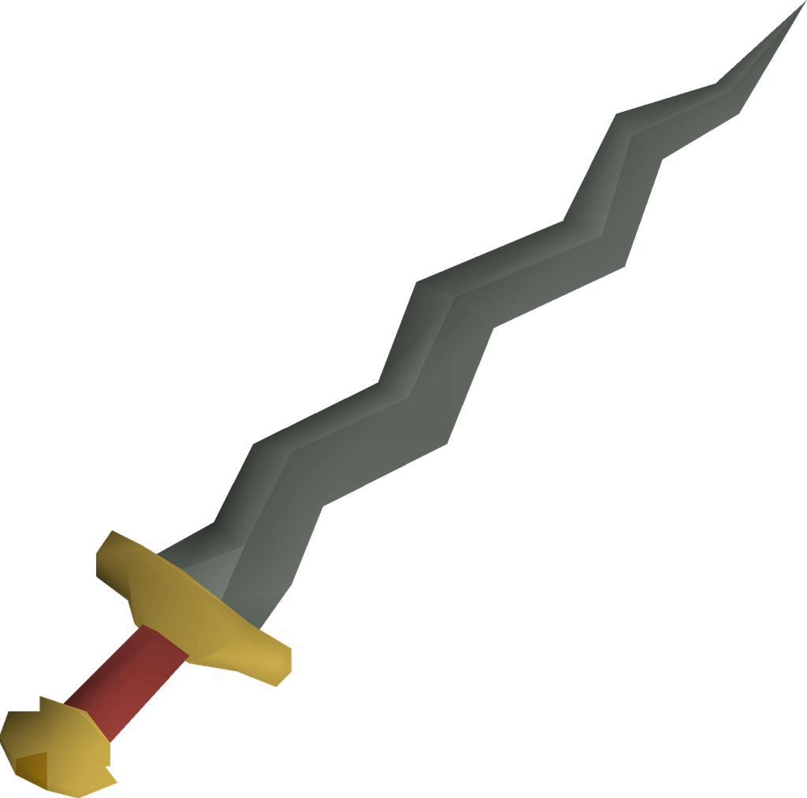 |
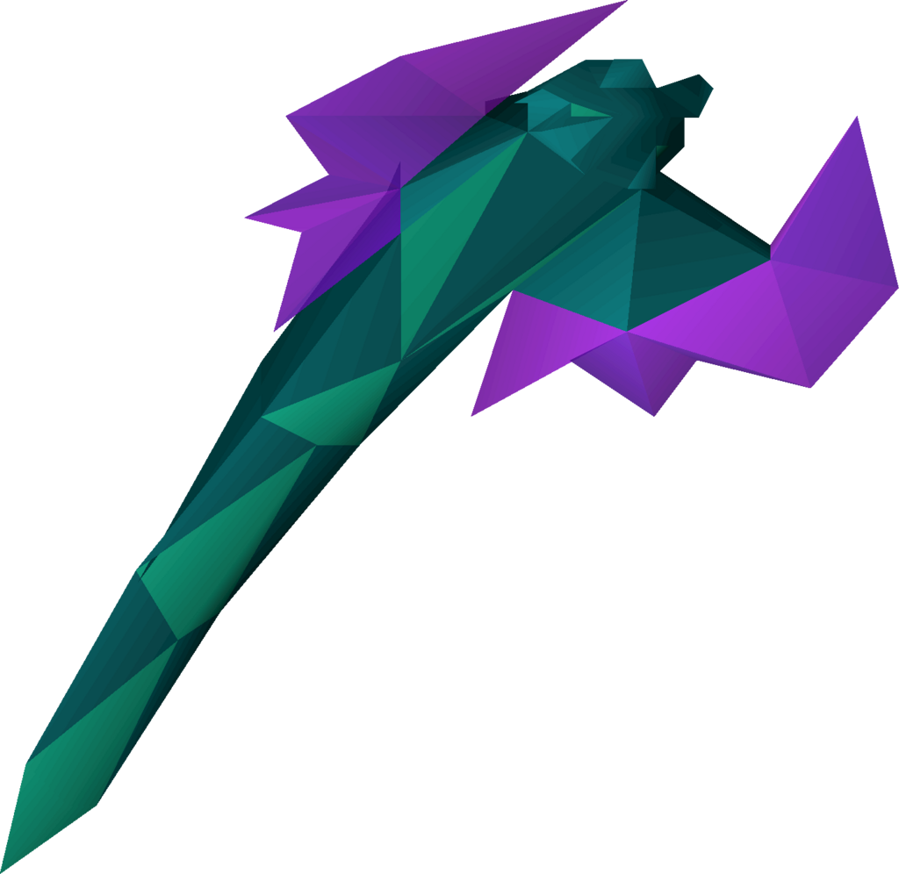 |
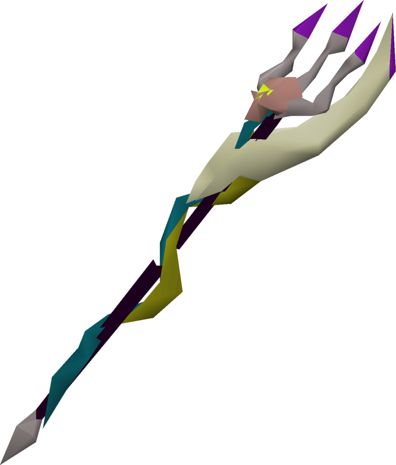 |
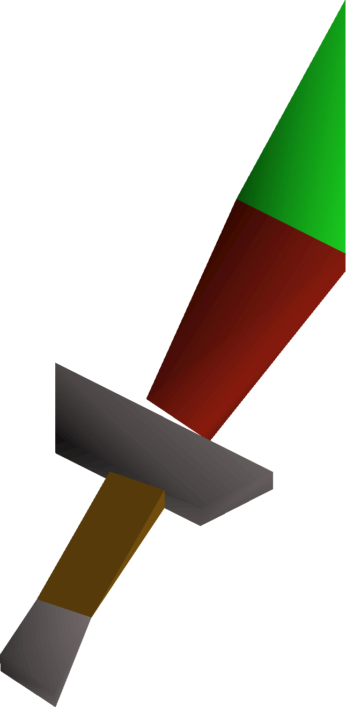 |
Osmumten's Fang is the most expensive item on this table, however it's price has dropped in and could drop in the future, making it an expensive but strong addition to your mid-game setup.
It has the highest stab bonus in the game, +105. It's special attack which gives a 50% accuracy boost to your next attack. |
The Toxic Blowpipe is the strongest and fastest ranged weapon in the game. It's special attack is capable of healing the player for 50% of the damage dealt.
It is created with a fletching level of 78, a chisel and a Tanzanite Fang, dropped by Zulrah, the mid-level boss that requires two types of damage to defeat. Which leads us to the trident that is upgraded by the same fang. |
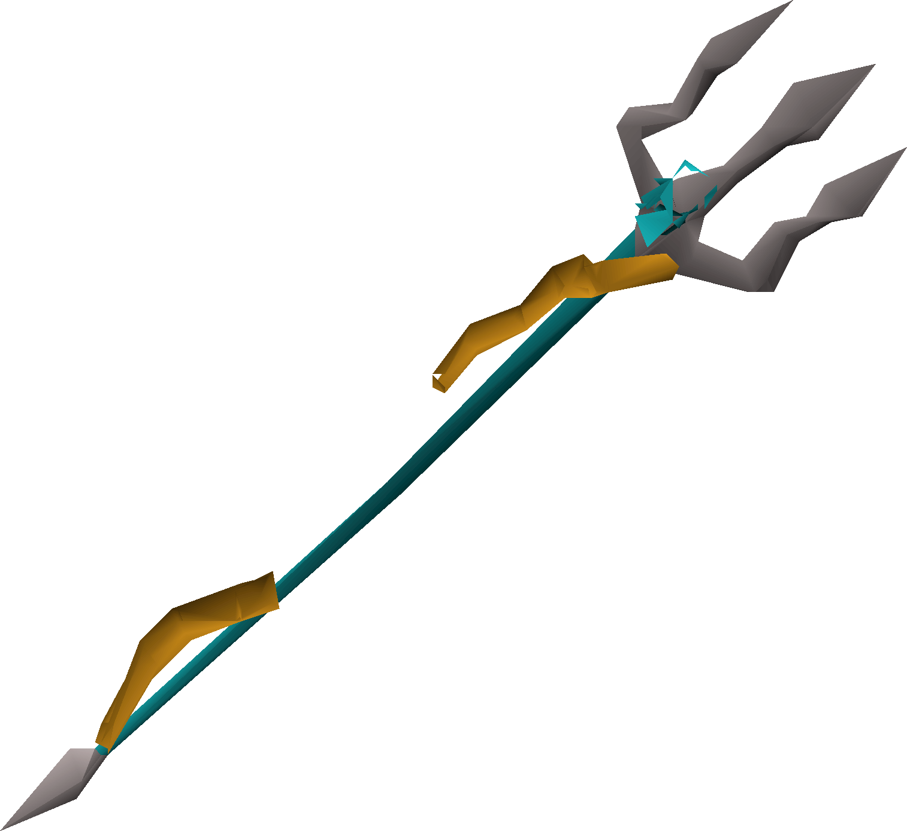 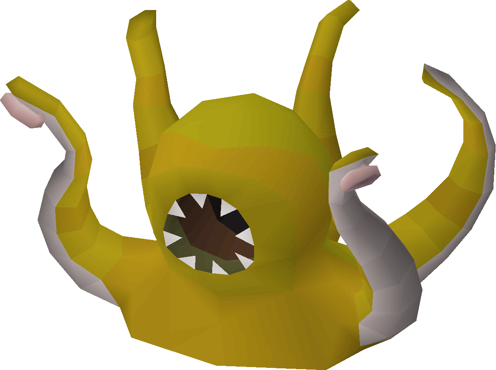 |
Many high level loadouts include weapons that do not have a special attack. Bringing a Dragon Dagger(p++) or DDS(Dragon dagger spec) is recommended in numerous cases when Dragon Claws are out of the price range.
They are easily obtained either as a drop from slayer monster or purchased in game. |
| Reward Chest |
Special Attack |
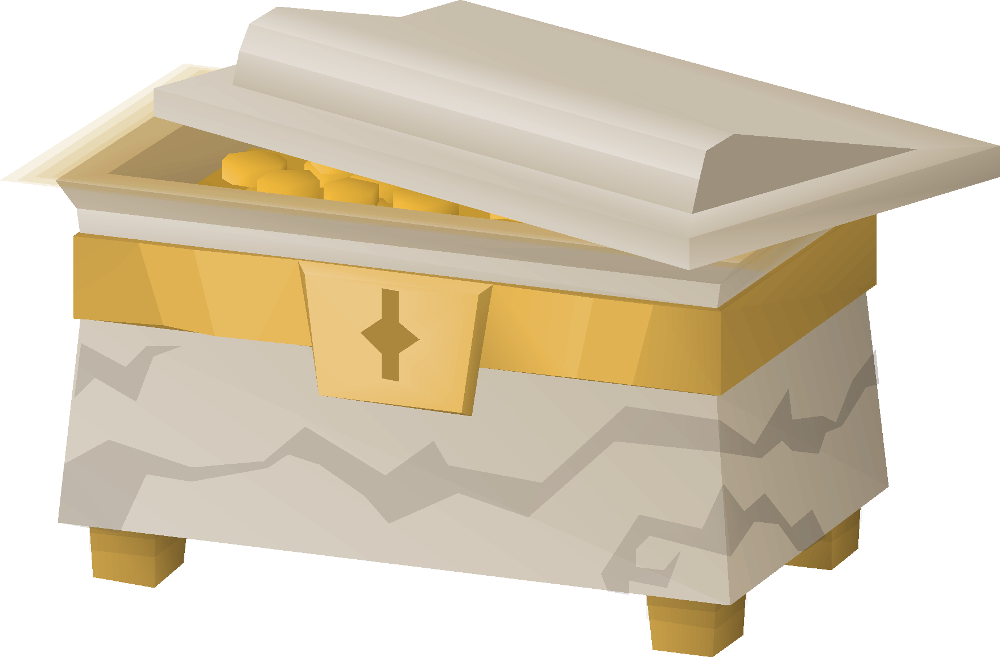 |
Zulrah |
The DDS attacks twice quickly, as seen below. It can be used four times with a full special bar. |
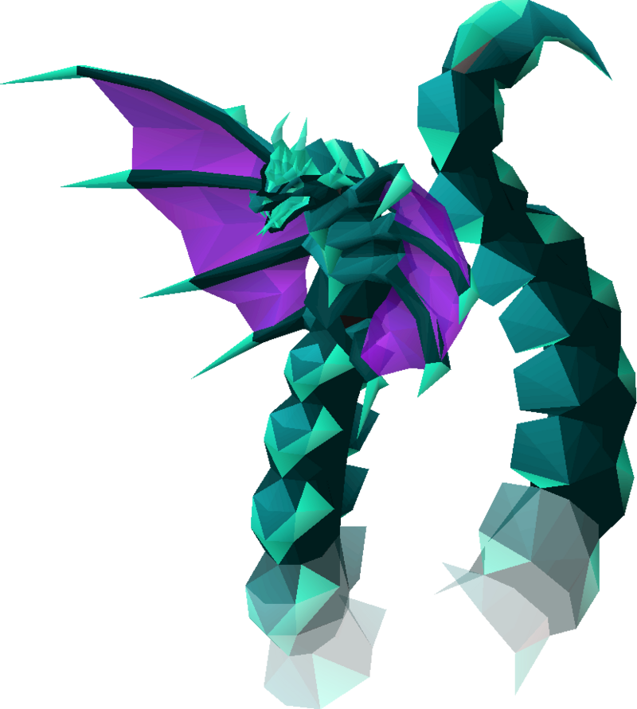 |
The Trident of the Swamp (e) is an upgraded version of the the Trident of the Seas(above). The trident is dropped by both the Kraken boss and the less Cave Kraken(above).
An uncharged trident, combined with the Tanzanite Fang creates a Trident of the Swamp. Adding 10 Kraken tentacles, dropped only by the boss, the trident becomes enchanted (e) and is able to hold a considerable amount of charges over the non-enchanted version. |
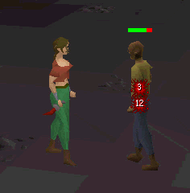 |
Current Grand Exchange Price:
23,310,592 coins |
Current Grand Exchange Price:
10,884,701 coins |
Current Grand Exchange Price:
7,245,099 coins |
Current Grand Exchange Price:
19,666 coins |
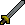
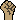

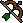
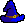 |
*Cost to fully charge: 3,145,536 coins
Total: 14,030,237 coins |
*Cost to fully charge: 2,374,901 coins
Total: 9,620,000 coins |
|